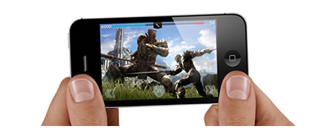
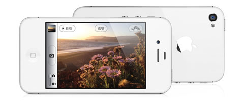

双核 A5 芯片，迄今最强劲的 iPhone 处理器
双核，让 A5 芯片双倍强大，图形处理快达 7 倍1。你会感觉到它所带来的效果 — 飞快。iPhone 4S 快速，反应灵敏，当你启动应用软件、浏览网页，以及做各种操作时，就会体验到它所成就的与众不同。而且无论你正在做什么，都可以持续进行。A5 芯片具有极高的效能，赋予 iPhone 4S 超长的电池使用时间。
双核，让 A5 芯片双倍强大，图形处理快达 7 倍1。你会感觉到它所带来的效果 — 飞快。iPhone 4S 快速，反应灵敏，当你启动应用软件、浏览网页，以及做各种操作时，就会体验到它所成就的与众不同。而且无论你正在做什么，都可以持续进行。A5 芯片具有极高的效能，赋予 iPhone 4S 超长的电池使用时间。

你无法相信会配备在手机上的优质摄像头
这可能是迄今最出色的手机摄像头。配备全新光学技术的它，或许就是你所需要的唯一一部相机。因为每张照片都使用 800 万像素高分辨率和具有更大光圈的 f/2.4 定制镜头拍摄，还有更先进的背部照度传感器、出色的自动白平衡功能、更理想的色彩保真度和面部检测，图像模糊的情况也会减少。这一切都意味着，无论有多少人，多少光线，你捕捉了多少动作，每张照片都会呈现其真实本色。等着看照片吧。
这可能是迄今最出色的手机摄像头。配备全新光学技术的它，或许就是你所需要的唯一一部相机。因为每张照片都使用 800 万像素高分辨率和具有更大光圈的 f/2.4 定制镜头拍摄，还有更先进的背部照度传感器、出色的自动白平衡功能、更理想的色彩保真度和面部检测，图像模糊的情况也会减少。这一切都意味着，无论有多少人，多少光线，你捕捉了多少动作，每张照片都会呈现其真实本色。等着看照片吧。

iOS，了不起的先进移动操作系统，易用非常。
iOS 的每一次进步都让每一个操作变得更简单。这让 iOS 系统远远领先于时代。iOS 5 再次飞跃前进，为 iPhone 4S 带来 200 多项新功能。下面介绍几项我们至爱的功能。
iOS 的每一次进步都让每一个操作变得更简单。这让 iOS 系统远远领先于时代。iOS 5 再次飞跃前进，为 iPhone 4S 带来 200 多项新功能。下面介绍几项我们至爱的功能。